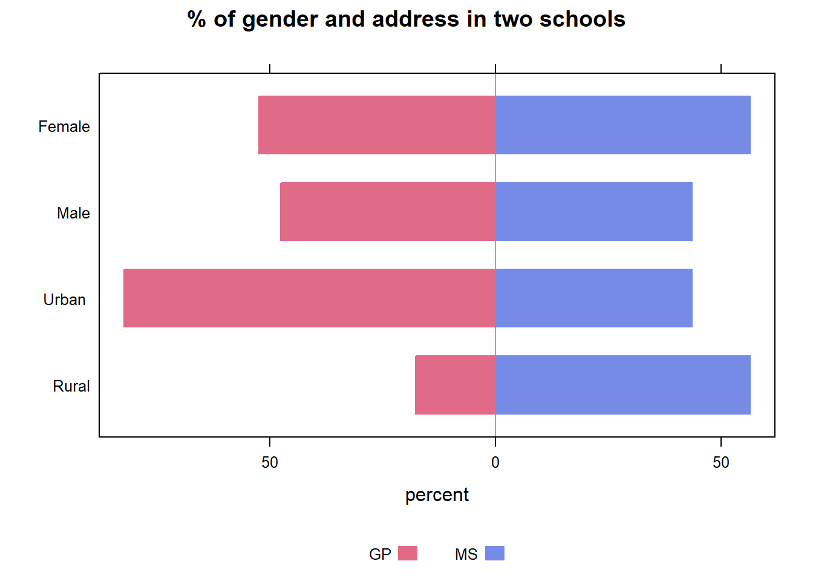

Chapter 3 Data cleaning and transformation
3.1 Data Merging
Two datasets are provided regarding two distinct subjects: Mathematics (mat) and Portuguese language (por). To combine these two datasets, we spcified the following columns to be used for merging because these columns are basic information of students:
| Column Name | Description |
|---|---|
| school | student’s school (binary: ‘GP’ - Gabriel Pereira or ‘MS’ - Mousinho da Silveira) |
| sex | student’s sex (binary: ‘F’ - female or ‘M’ - male) |
| age | student’s age (numeric: from 15 to 22) |
| address | student’s home address type (binary: ‘U’ - urban or ‘R’ - rural) |
| famsize | family size (binary: ‘LE3’ - less or equal to 3 or ‘GT3’ - greater than 3) |
| Pstatus | parent’s cohabitation status (binary: ‘T’ - living together or ‘A’ - apart) |
| Medu | mother’s education (numeric: 0 - none, 1 - primary education (4th grade), 2 - 5th to 9th grade, 3 - secondary education or 4 - higher education) |
| Fedu | father’s education (numeric: 0 - none, 1 - primary education (4th grade), 2 - 5th to 9th grade, 3 - secondary education or 4 - higher education) |
| Mjob | mother’s job (nominal: ‘teacher’, ‘health’ care related, civil ‘services’ (e.g. administrative or police), ‘at_home’ or ‘other’) |
| Fjob | father’s job (nominal: ‘teacher’, ‘health’ care related, civil ‘services’ (e.g. administrative or police), ‘at_home’ or ‘other’) |
| reason | reason to choose this school (nominal: close to ‘home’, school ‘reputation’, ‘course’ preference or ‘other’) |
| guardian | student’s guardian (nominal: ‘mother’, ‘father’ or ‘other’) |
| nursery | attended nursery school (binary: yes or no) |
| internet | Internet access at home (binary: yes or no) |
3.2 Data Cleaning
After inspecting each variables carefully, we detected that there were outliers in Age and abnormal values in Math and Portuguese grades.
Let’s firstly take a look at the boxplot of age.

Most students leave secondary school at 16 or 17. There may be some exceptions so that age 19 in this dataset seems reasonable. However, we tend to believe that age 20 and 22 are outliers so it is better to remove data which includes age = 20 or age = 22.
Next, let’s move to Math and Portuguese grades in different period.

There are grades that equal to 0. Usually, a student with bad performance on a course may result in very low grade, but not 0. A grade of 0 usually appears when a student missed the exam or he/she cheated in exam. However, absence from exam or cheating are not part of factors we are studying. In this case, we remove all data with grade of 0.
3.3 Variable Transformation
Convert
absencesvariable(numeric from 0 to 93) into categorical variable as follow:
Ifabsences= 0, then convert it to 0.
Ifabsences> 0 andabsences<= first quartile, then convert it to 1.
Ifabsences> first quartile andabsences<= second quartile, then convert it to 2.
Ifabsences> second quartile andabsences<= thrid quartile, then convert it to 3.
Ifabsences> thrid quartile, then convert it to 4.
Convert all Math and Portuguese grades into categorical variables based on the following grading system for Portuguese school:
| Grade | Percentage | Description |
|---|---|---|
| 5(A) | 90-100 | Very good or excellent – best possible grade |
| 4(B) | 70-89 | Good |
| 3(C) | 50-69 | Satisfactory – indicates average performance |
| 2(D) | 20-49 | Unsatisfactory |
| 1(F) | 0-19 | Poor – lowest possible grade |
The grading system can be found here